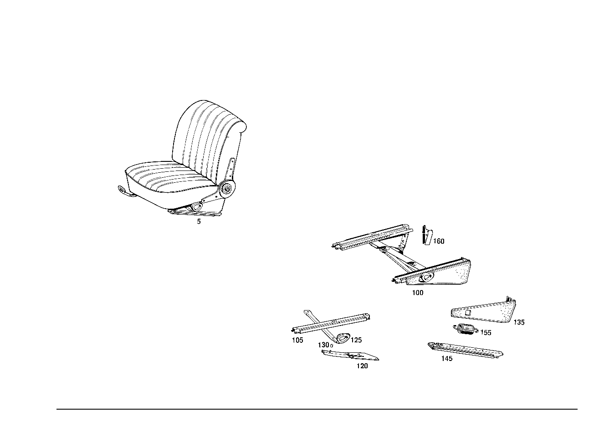

| № | Артикул | Название | Кол. | Примечание | Ограничение |
|---|---|---|---|---|---|
| 100 | A 109 910 03 36 | - РЕГУЛИРОВКА СИДЕНЬЯ | - | Рулевое управление: Вправо Z 55.715/01, Z 55.715/02, Z 55.715/03, Z 55.715/04, Z 55.715/05, Z 55.715/06, Z 55.715/07 [008] UP TO CHASSIS: 108.012 066422 108.014 050920 108.015 002702 109.015 002313 | |
| 100 | A 108 910 07 36 | - РЕГУЛИРОВКА СИДЕНЬЯ | - | Z 55.715/01, Z 55.715/02, Z 55.715/03, Z 55.715/04, Z 55.715/05, Z 55.715/06, Z 55.715/07 | |
| 100 | A 108 910 09 36 | - РЕГУЛИРОВКА СИДЕНЬЯ | - | Рулевое управление: Вправо Z 55.715/01, Z 55.715/02, Z 55.715/03, Z 55.715/04, Z 55.715/05, Z 55.715/06, Z 55.715/07 | |
| 100 | A 108 910 11 36 | - РЕГУЛИРОВКА СИДЕНЬЯ | 1 | СЛЕВА Рулевое управление: Вправо Z 55.715/01, Z 55.715/02, Z 55.715/03, Z 55.715/04, Z 55.715/05, Z 55.715/06, Z 55.715/07 [013] FROM CHASSIS: 108.012 066423 108.014 050921 108.015 002703 109.015 002314 | |
| 105 | A 108 910 13 05 | - НАПРАВЛЯЮЩАЯ СИДЕНЬЯ | 1 | СВЕРХУ СНАРУЖИ Z 55.715/01, Z 55.715/02, Z 55.715/03, Z 55.715/04, Z 55.715/05, Z 55.715/06, Z 55.715/07 | |
| 120 | A 108 910 01 14 | - ДЕРЖАТЕЛЬ | - | Рулевое управление: Вправо Z 55.715/01, Z 55.715/02, Z 55.715/03, Z 55.715/04, Z 55.715/05, Z 55.715/06, Z 55.715/07 [008] UP TO CHASSIS: 108.012 066422 108.014 050920 108.015 002702 109.015 002313 | |
| 120 | A 108 910 07 14 | - ДЕРЖАТЕЛЬ | - | Рулевое управление: Вправо Z 55.715/01, Z 55.715/02, Z 55.715/03, Z 55.715/04, Z 55.715/05, Z 55.715/06, Z 55.715/07 | |
| 120 | A 116 910 15 14 | - Держатель | 1 | СЛЕВА Рулевое управление: Вправо Z 55.715/01, Z 55.715/02, Z 55.715/03, Z 55.715/04, Z 55.715/05, Z 55.715/06, Z 55.715/07 [013] FROM CHASSIS: 108.012 066423 108.014 050921 108.015 002703 109.015 002314 | |
| 125 | A 108 910 01 71 | - РЫЧАГ | - | Рулевое управление: Вправо Z 55.715/01, Z 55.715/02, Z 55.715/03, Z 55.715/04, Z 55.715/05, Z 55.715/06, Z 55.715/07 [008] UP TO CHASSIS: 108.012 066422 108.014 050920 108.015 002702 109.015 002313 | |
| 125 | A 108 910 03 71 | - РЫЧАГ | 1 | ADJUSTER,LEFT Рулевое управление: Вправо Z 55.715/01, Z 55.715/02, Z 55.715/03, Z 55.715/04, Z 55.715/05, Z 55.715/06, Z 55.715/07 [013] FROM CHASSIS: 108.012 066423 108.014 050921 108.015 002703 109.015 002314 | |
| 130 | A 108 919 00 33 | РАСПОРН. ТРУБКА | - | Z 55.715/01, Z 55.715/02, Z 55.715/03, Z 55.715/04, Z 55.715/05, Z 55.715/06, Z 55.715/07 | |
| 130 | A 116 919 00 33 | - РАСПОРН. ТРУБКА | 1 | Z 55.715/01, Z 55.715/02, Z 55.715/03, Z 55.715/04, Z 55.715/05, Z 55.715/06, Z 55.715/07 | |
| 135 | A 108 919 16 20 | - ПАНЕЛЬ | 1 | СПРАВА Рулевое управление: Влево Z 55.715/01, Z 55.715/02, Z 55.715/03, Z 55.715/04, Z 55.715/05, Z 55.715/06, Z 55.715/07 [001] STATE COLOR NUMBER WHEN ORDERING,AND PLEASE STATE WHETHER FRONT SEAT BACKREST SHOULD BE MADE READY FOR INSTALLATION OF HEADREST [015] FROM CHASSIS: 108.016 054279 108.018,019 059271 109.018 004347 109.056 001590 | |
| 145 | A 108 910 35 05 | - НАПРАВЛЯЮЩАЯ СИДЕНЬЯ | - | Z 55.715/01, Z 55.715/02, Z 55.715/03, Z 55.715/04, Z 55.715/05, Z 55.715/06, Z 55.715/07 | |
| 155 | A 108 919 03 37 | пружина | 1 | Z 55.715/01, Z 55.715/02, Z 55.715/03, Z 55.715/04, Z 55.715/05, Z 55.715/06, Z 55.715/07 | |
| 160 | A 108 919 14 20 | ПАНЕЛЬ | - | Z 55.715/01, Z 55.715/02, Z 55.715/03, Z 55.715/04, Z 55.715/05, Z 55.715/06, Z 55.715/07 | |
| 160 | A 108 919 17 20 | ПАНЕЛЬ | 1 | INSIDE,LEFT CONSOLE Рулевое управление: Влево Z 55.715/01, Z 55.715/02, Z 55.715/03, Z 55.715/04, Z 55.715/05, Z 55.715/06, Z 55.715/07 [001] STATE COLOR NUMBER WHEN ORDERING,AND PLEASE STATE WHETHER FRONT SEAT BACKREST SHOULD BE MADE READY FOR INSTALLATION OF HEADREST | |
| A 109 910 01 01 | СИДЕНЬЕ ВОДИТЕЛЯ | - | Рулевое управление: Вправо Z 55.715/04 | ||
| A 109 910 02 01 | СИДЕНЬЕ ВОДИТЕЛЯ | - | Рулевое управление: Влево Z 55.715/04 | ||
| A 109 910 05 01 | СИДЕНЬЕ ВОДИТЕЛЯ | - | Рулевое управление: Вправо Z 55.715/07 | ||
| A 109 910 06 01 | СИДЕНЬЕ ВОДИТЕЛЯ | - | Рулевое управление: Влево Z 55.715/07 | ||
| A 109 910 93 01 | СИДЕНЬЕ ВОДИТЕЛЯ | 1 | СЛЕВА Рулевое управление: Вправо Z 55.715/04 [402] БОЛЬШЕ НЕ ПОСТАВЛЯЕТСЯ [001] STATE COLOR NUMBER WHEN ORDERING,AND PLEASE STATE WHETHER FRONT SEAT BACKREST SHOULD BE MADE READY FOR INSTALLATION OF HEADREST [002] UP TO CHASSIS: 108.012 061685 108.014 047399 108.015 002652 109.015 002130 | ||
| A 109 910 94 01 | СИДЕНЬЕ ВОДИТЕЛЯ | 1 | СПРАВА Рулевое управление: Влево Z 55.715/04 [402] БОЛЬШЕ НЕ ПОСТАВЛЯЕТСЯ [001] STATE COLOR NUMBER WHEN ORDERING,AND PLEASE STATE WHETHER FRONT SEAT BACKREST SHOULD BE MADE READY FOR INSTALLATION OF HEADREST [002] UP TO CHASSIS: 108.012 061685 108.014 047399 108.015 002652 109.015 002130 | ||
| A 109 910 07 09 | СИДЕНЬЕ ВОДИТЕЛЯ | 1 | СЛЕВА Рулевое управление: Вправо Z 55.715/04 [001] STATE COLOR NUMBER WHEN ORDERING,AND PLEASE STATE WHETHER FRONT SEAT BACKREST SHOULD BE MADE READY FOR INSTALLATION OF HEADREST [003] FROM CHASSIS: 108.012 061686 108.014 047400 108.015 002653 109.015 002131 [039] UP TO CHASSIS: 109.015 UNTIL PRODUCTION STOP 109.016 000924 109.018 000263 | ||
| A 109 910 08 09 | СИДЕНЬЕ ВОДИТЕЛЯ | 1 | СПРАВА Рулевое управление: Влево Z 55.715/04 [001] STATE COLOR NUMBER WHEN ORDERING,AND PLEASE STATE WHETHER FRONT SEAT BACKREST SHOULD BE MADE READY FOR INSTALLATION OF HEADREST [003] FROM CHASSIS: 108.012 061686 108.014 047400 108.015 002653 109.015 002131 [039] UP TO CHASSIS: 109.015 UNTIL PRODUCTION STOP 109.016 000924 109.018 000263 | ||
| A 109 910 97 01 | СИДЕНЬЕ ВОДИТЕЛЯ | 1 | СЛЕВА Рулевое управление: Вправо Z 55.715/07 [402] БОЛЬШЕ НЕ ПОСТАВЛЯЕТСЯ [001] STATE COLOR NUMBER WHEN ORDERING,AND PLEASE STATE WHETHER FRONT SEAT BACKREST SHOULD BE MADE READY FOR INSTALLATION OF HEADREST [002] UP TO CHASSIS: 108.012 061685 108.014 047399 108.015 002652 109.015 002130 | ||
| A 109 910 98 01 | СИДЕНЬЕ ВОДИТЕЛЯ | 1 | СПРАВА Рулевое управление: Влево Z 55.715/07 [402] БОЛЬШЕ НЕ ПОСТАВЛЯЕТСЯ [001] STATE COLOR NUMBER WHEN ORDERING,AND PLEASE STATE WHETHER FRONT SEAT BACKREST SHOULD BE MADE READY FOR INSTALLATION OF HEADREST [002] UP TO CHASSIS: 108.012 061685 108.014 047399 108.015 002652 109.015 002130 | ||
| A 109 910 79 01 | СИДЕНЬЕ ВОДИТЕЛЯ | - | Рулевое управление: Вправо Z 55.715/05 | ||
| A 109 910 80 01 | СИДЕНЬЕ ВОДИТЕЛЯ | - | Рулевое управление: Влево Z 55.715/05 | ||
| A 109 910 01 09 | СИДЕНЬЕ ВОДИТЕЛЯ | 1 | СЛЕВА Рулевое управление: Вправо Z 55.715/05 [001] STATE COLOR NUMBER WHEN ORDERING,AND PLEASE STATE WHETHER FRONT SEAT BACKREST SHOULD BE MADE READY FOR INSTALLATION OF HEADREST [002] UP TO CHASSIS: 108.012 061685 108.014 047399 108.015 002652 109.015 002130 [005] FROM CHASSIS: 109.015 001670 | ||
| A 109 910 02 09 | СИДЕНЬЕ ВОДИТЕЛЯ | 1 | СПРАВА Рулевое управление: Влево Z 55.715/05 [001] STATE COLOR NUMBER WHEN ORDERING,AND PLEASE STATE WHETHER FRONT SEAT BACKREST SHOULD BE MADE READY FOR INSTALLATION OF HEADREST [002] UP TO CHASSIS: 108.012 061685 108.014 047399 108.015 002652 109.015 002130 [005] FROM CHASSIS: 109.015 001670 | ||
| A 109 910 21 09 | СИДЕНЬЕ ВОДИТЕЛЯ | 1 | СЛЕВА Рулевое управление: Вправо Z 55.715/05 [001] STATE COLOR NUMBER WHEN ORDERING,AND PLEASE STATE WHETHER FRONT SEAT BACKREST SHOULD BE MADE READY FOR INSTALLATION OF HEADREST [003] FROM CHASSIS: 108.012 061686 108.014 047400 108.015 002653 109.015 002131 | ||
| A 109 910 22 09 | СИДЕНЬЕ ВОДИТЕЛЯ | 1 | СПРАВА Рулевое управление: Влево Z 55.715/05 [001] STATE COLOR NUMBER WHEN ORDERING,AND PLEASE STATE WHETHER FRONT SEAT BACKREST SHOULD BE MADE READY FOR INSTALLATION OF HEADREST [003] FROM CHASSIS: 108.012 061686 108.014 047400 108.015 002653 109.015 002131 | ||
| A 109 910 83 01 | СИДЕНЬЕ ВОДИТЕЛЯ | - | Рулевое управление: Вправо Z 55.715/06 | ||
| A 109 910 84 01 | СИДЕНЬЕ ВОДИТЕЛЯ | - | Рулевое управление: Влево Z 55.715/06 | ||
| A 109 910 03 09 | СИДЕНЬЕ ВОДИТЕЛЯ | 1 | СЛЕВА Рулевое управление: Вправо Z 55.715/06 [001] STATE COLOR NUMBER WHEN ORDERING,AND PLEASE STATE WHETHER FRONT SEAT BACKREST SHOULD BE MADE READY FOR INSTALLATION OF HEADREST [002] UP TO CHASSIS: 108.012 061685 108.014 047399 108.015 002652 109.015 002130 [005] FROM CHASSIS: 109.015 001670 | ||
| A 109 910 04 09 | СИДЕНЬЕ ВОДИТЕЛЯ | 1 | СПРАВА Рулевое управление: Влево Z 55.715/06 [001] STATE COLOR NUMBER WHEN ORDERING,AND PLEASE STATE WHETHER FRONT SEAT BACKREST SHOULD BE MADE READY FOR INSTALLATION OF HEADREST [002] UP TO CHASSIS: 108.012 061685 108.014 047399 108.015 002652 109.015 002130 [005] FROM CHASSIS: 109.015 001670 | ||
| A 109 910 25 09 | СИДЕНЬЕ ВОДИТЕЛЯ | 1 | СЛЕВА Рулевое управление: Вправо Z 55.715/06 [001] STATE COLOR NUMBER WHEN ORDERING,AND PLEASE STATE WHETHER FRONT SEAT BACKREST SHOULD BE MADE READY FOR INSTALLATION OF HEADREST [003] FROM CHASSIS: 108.012 061686 108.014 047400 108.015 002653 109.015 002131 [039] UP TO CHASSIS: 109.015 UNTIL PRODUCTION STOP 109.016 000924 109.018 000263 | ||
| A 109 910 15 12 | СИДЕНЬЕ ВОДИТЕЛЯ | 1 | СЛЕВА Рулевое управление: Вправо Z 55.715/06 [001] STATE COLOR NUMBER WHEN ORDERING,AND PLEASE STATE WHETHER FRONT SEAT BACKREST SHOULD BE MADE READY FOR INSTALLATION OF HEADREST [040] FROM CHASSIS: 109.016 000925 109.018 000264 [011] UP TO CHASSIS: 109.016 001575 109.018 001552 | ||
| A 109 910 61 12 | СИДЕНЬЕ ВОДИТЕЛЯ | 1 | СЛЕВА Рулевое управление: Вправо Z 55.715/06 [001] STATE COLOR NUMBER WHEN ORDERING,AND PLEASE STATE WHETHER FRONT SEAT BACKREST SHOULD BE MADE READY FOR INSTALLATION OF HEADREST [012] FROM CHASSIS: 109.016 001576 109.018 001553 | ||
| A 109 910 26 09 | СИДЕНЬЕ ВОДИТЕЛЯ | 1 | СПРАВА Рулевое управление: Влево Z 55.715/06 [001] STATE COLOR NUMBER WHEN ORDERING,AND PLEASE STATE WHETHER FRONT SEAT BACKREST SHOULD BE MADE READY FOR INSTALLATION OF HEADREST [003] FROM CHASSIS: 108.012 061686 108.014 047400 108.015 002653 109.015 002131 [039] UP TO CHASSIS: 109.015 UNTIL PRODUCTION STOP 109.016 000924 109.018 000263 | ||
| A 109 910 16 17 | ГНЕЗДО | 1 | СПРАВА Рулевое управление: Влево Z 55.715/06 [001] STATE COLOR NUMBER WHEN ORDERING,AND PLEASE STATE WHETHER FRONT SEAT BACKREST SHOULD BE MADE READY FOR INSTALLATION OF HEADREST [040] FROM CHASSIS: 109.016 000925 109.018 000264 [011] UP TO CHASSIS: 109.016 001575 109.018 001552 | ||
| A 109 910 62 12 | СИДЕНЬЕ ВОДИТЕЛЯ | 1 | СПРАВА Рулевое управление: Влево Z 55.715/06 [001] STATE COLOR NUMBER WHEN ORDERING,AND PLEASE STATE WHETHER FRONT SEAT BACKREST SHOULD BE MADE READY FOR INSTALLATION OF HEADREST [012] FROM CHASSIS: 109.016 001576 109.018 001553 | ||
| A 108 910 04 36 | - РЕГУЛИРОВКА СИДЕНЬЯ | - | Рулевое управление: Влево Z 55.715/01, Z 55.715/02, Z 55.715/03, Z 55.715/04, Z 55.715/05, Z 55.715/06, Z 55.715/07 [008] UP TO CHASSIS: 108.012 066422 108.014 050920 108.015 002702 109.015 002313 | ||
| A 108 910 05 36 | - РЕГУЛИРОВКА СИДЕНЬЯ | - | Z 55.715/01, Z 55.715/02, Z 55.715/03, Z 55.715/04, Z 55.715/05, Z 55.715/06, Z 55.715/07 | ||
| A 108 910 06 36 | - РЕГУЛИРОВКА СИДЕНЬЯ | - | Z 55.715/01, Z 55.715/02, Z 55.715/03, Z 55.715/04, Z 55.715/05, Z 55.715/06, Z 55.715/07 | ||
| A 108 910 08 36 | - РЕГУЛИРОВКА СИДЕНЬЯ | - | Z 55.715/01, Z 55.715/02, Z 55.715/03, Z 55.715/04, Z 55.715/05, Z 55.715/06, Z 55.715/07 | ||
| A 108 910 10 36 | - РЕГУЛИРОВКА СИДЕНЬЯ | - | Рулевое управление: Влево Z 55.715/01, Z 55.715/02, Z 55.715/03, Z 55.715/04, Z 55.715/05, Z 55.715/06, Z 55.715/07 | ||
| A 108 910 12 36 | - РЕГУЛИРОВКА СИДЕНЬЯ | 1 | СПРАВА Рулевое управление: Влево Z 55.715/01, Z 55.715/02, Z 55.715/03, Z 55.715/04, Z 55.715/05, Z 55.715/06, Z 55.715/07 [013] FROM CHASSIS: 108.012 066423 108.014 050921 108.015 002703 109.015 002314 | ||
| A 108 910 14 05 | - НАПРАВЛЯЮЩАЯ СИДЕНЬЯ | 1 | СВЕРХУ ВНУТРИ Z 55.715/01, Z 55.715/02, Z 55.715/03, Z 55.715/04, Z 55.715/05, Z 55.715/06, Z 55.715/07 | ||
| A 000 983 01 86 | - ИСКУССТВ. КОЖА | 1 | ВНУТР. Z 55.715/05, Z 55.715/06 [001] STATE COLOR NUMBER WHEN ORDERING,AND PLEASE STATE WHETHER FRONT SEAT BACKREST SHOULD BE MADE READY FOR INSTALLATION OF HEADREST [016] UP TO CHASSIS: 108.016 027955 108.018,019 029079 109.016 000994 109.018 000389 108.012,014,015 UNTIL PRODUCTION STOP 109.015 UNTIL PRODUCTION STOP [404] ЗАКАЗЫВАТЬ ПОГОННЫМИ МЕТРАМИ | ||
| A 001 983 29 86 | - ИСКУССТВ. КОЖА | 1 | ВНУТР. Z 55.715/05, Z 55.715/06 [402] БОЛЬШЕ НЕ ПОСТАВЛЯЕТСЯ [001] STATE COLOR NUMBER WHEN ORDERING,AND PLEASE STATE WHETHER FRONT SEAT BACKREST SHOULD BE MADE READY FOR INSTALLATION OF HEADREST [016] UP TO CHASSIS: 108.016 027955 108.018,019 029079 109.016 000994 109.018 000389 108.012,014,015 UNTIL PRODUCTION STOP 109.015 UNTIL PRODUCTION STOP [404] ЗАКАЗЫВАТЬ ПОГОННЫМИ МЕТРАМИ | ||
| A 000 983 02 84 | - КОЖА | 1 | ВНУТР. Z 55.715/04, Z 55.715/07 [001] STATE COLOR NUMBER WHEN ORDERING,AND PLEASE STATE WHETHER FRONT SEAT BACKREST SHOULD BE MADE READY FOR INSTALLATION OF HEADREST [016] UP TO CHASSIS: 108.016 027955 108.018,019 029079 109.016 000994 109.018 000389 108.012,014,015 UNTIL PRODUCTION STOP 109.015 UNTIL PRODUCTION STOP [404] ЗАКАЗЫВАТЬ ПОГОННЫМИ МЕТРАМИ | ||
| A 000 990 28 21 | - БОЛТ | - | Z 55.715/01, Z 55.715/02, Z 55.715/03, Z 55.715/04, Z 55.715/05, Z 55.715/06, Z 55.715/07 | ||
| N 914116 006400 | - Винт | 4 | Z 55.715/01, Z 55.715/02, Z 55.715/03, Z 55.715/04, Z 55.715/05, Z 55.715/06, Z 55.715/07 | ||
| A 000 990 88 91 | - Пружинная гайка | 2 | Z 55.715/01, Z 55.715/02, Z 55.715/03, Z 55.715/04, Z 55.715/05, Z 55.715/06, Z 55.715/07 | ||
| A 108 910 02 14 | - ДЕРЖАТЕЛЬ | - | Рулевое управление: Влево Z 55.715/01, Z 55.715/02, Z 55.715/03, Z 55.715/04, Z 55.715/05, Z 55.715/06, Z 55.715/07 [008] UP TO CHASSIS: 108.012 066422 108.014 050920 108.015 002702 109.015 002313 | ||
| A 108 910 08 14 | - ДЕРЖАТЕЛЬ | - | Рулевое управление: Влево Z 55.715/01, Z 55.715/02, Z 55.715/03, Z 55.715/04, Z 55.715/05, Z 55.715/06, Z 55.715/07 | ||
| A 116 910 16 14 | - Держатель | 1 | СПРАВА Рулевое управление: Влево Z 55.715/01, Z 55.715/02, Z 55.715/03, Z 55.715/04, Z 55.715/05, Z 55.715/06, Z 55.715/07 [013] FROM CHASSIS: 108.012 066423 108.014 050921 108.015 002703 109.015 002314 | ||
| A 108 910 02 71 | - РЫЧАГ | - | Рулевое управление: Влево Z 55.715/01, Z 55.715/02, Z 55.715/03, Z 55.715/04, Z 55.715/05, Z 55.715/06, Z 55.715/07 [008] UP TO CHASSIS: 108.012 066422 108.014 050920 108.015 002702 109.015 002313 | ||
| A 108 910 04 71 | - РЫЧАГ | 1 | СПРАВА Рулевое управление: Влево Z 55.715/01, Z 55.715/02, Z 55.715/03, Z 55.715/04, Z 55.715/05, Z 55.715/06, Z 55.715/07 [013] FROM CHASSIS: 108.012 066423 108.014 050921 108.015 002703 109.015 002314 | ||
| N 000934 006007 | - Гайка | 1 | Z 55.715/01, Z 55.715/02, Z 55.715/03, Z 55.715/04, Z 55.715/05, Z 55.715/06, Z 55.715/07 | ||
| A 094 990 68 10 | - Пружинное кольцо | 1 | Z 55.715/01, Z 55.715/02, Z 55.715/03, Z 55.715/04, Z 55.715/05, Z 55.715/06, Z 55.715/07 | ||
| A 000 997 31 81 | - Проходная втулка | 1 | Z 55.715/01, Z 55.715/02, Z 55.715/03, Z 55.715/04, Z 55.715/05, Z 55.715/06, Z 55.715/07 | ||
| A 108 910 01 18 | - ПАНЕЛЬ | 1 | СНАРУЖИ СЛЕВА Рулевое управление: Вправо Z 55.715/01, Z 55.715/02, Z 55.715/03, Z 55.715/04, Z 55.715/05, Z 55.715/06, Z 55.715/07 [014] UP TO CHASSIS: 108.016 054278 108.018,019 059270 109.018 004346 109.056 001589 108.012,014,015 UNTIL PRODUCTION STOP 109.015,016 UNTIL PRODUCTION STOP | ||
| A 108 910 02 18 | - ПАНЕЛЬ | 1 | СПРАВА Рулевое управление: Влево Z 55.715/01, Z 55.715/02, Z 55.715/03, Z 55.715/04, Z 55.715/05, Z 55.715/06, Z 55.715/07 [014] UP TO CHASSIS: 108.016 054278 108.018,019 059270 109.018 004346 109.056 001589 108.012,014,015 UNTIL PRODUCTION STOP 109.015,016 UNTIL PRODUCTION STOP | ||
| A 108 919 15 20 | - ПАНЕЛЬ | 1 | СЛЕВА Рулевое управление: Вправо Z 55.715/01, Z 55.715/02, Z 55.715/03, Z 55.715/04, Z 55.715/05, Z 55.715/06, Z 55.715/07 [001] STATE COLOR NUMBER WHEN ORDERING,AND PLEASE STATE WHETHER FRONT SEAT BACKREST SHOULD BE MADE READY FOR INSTALLATION OF HEADREST [015] FROM CHASSIS: 108.016 054279 108.018,019 059271 109.018 004347 109.056 001590 | ||
| A 000 983 02 84 | - КОЖА | 1 | (ORDER BY THE METER) Z 55.715/04, Z 55.715/07 [001] STATE COLOR NUMBER WHEN ORDERING,AND PLEASE STATE WHETHER FRONT SEAT BACKREST SHOULD BE MADE READY FOR INSTALLATION OF HEADREST [016] UP TO CHASSIS: 108.016 027955 108.018,019 029079 109.016 000994 109.018 000389 108.012,014,015 UNTIL PRODUCTION STOP 109.015 UNTIL PRODUCTION STOP | ||
| A 000 983 01 86 | - ИСКУССТВ. КОЖА | 1 | (ORDER BY THE METER) Z 55.715/05, Z 55.715/06 [001] STATE COLOR NUMBER WHEN ORDERING,AND PLEASE STATE WHETHER FRONT SEAT BACKREST SHOULD BE MADE READY FOR INSTALLATION OF HEADREST [014] UP TO CHASSIS: 108.016 054278 108.018,019 059270 109.018 004346 109.056 001589 108.012,014,015 UNTIL PRODUCTION STOP 109.015,016 UNTIL PRODUCTION STOP | ||
| A 000 983 01 86 | ИСКУССТВ. КОЖА | 1 | (ORDER BY THE METER) Z 55.715/04, Z 55.715/07 [014] UP TO CHASSIS: 108.016 054278 108.018,019 059270 109.018 004346 109.056 001589 108.012,014,015 UNTIL PRODUCTION STOP 109.015,016 UNTIL PRODUCTION STOP [017] FROM CHASSIS: 108.016 027956 108.018,019 029080 109.016 000995 109.018 000930 | ||
| A 001 983 29 86 | - ИСКУССТВ. КОЖА | 1 | (ORDER BY THE METER) Z 55.715/05, Z 55.715/06 [402] БОЛЬШЕ НЕ ПОСТАВЛЯЕТСЯ [001] STATE COLOR NUMBER WHEN ORDERING,AND PLEASE STATE WHETHER FRONT SEAT BACKREST SHOULD BE MADE READY FOR INSTALLATION OF HEADREST [014] UP TO CHASSIS: 108.016 054278 108.018,019 059270 109.018 004346 109.056 001589 108.012,014,015 UNTIL PRODUCTION STOP 109.015,016 UNTIL PRODUCTION STOP | ||
| A 001 983 29 86 | ИСКУССТВ. КОЖА | 1 | (ORDER BY THE METER) Z 55.715/04, Z 55.715/07 [402] БОЛЬШЕ НЕ ПОСТАВЛЯЕТСЯ [014] UP TO CHASSIS: 108.016 054278 108.018,019 059270 109.018 004346 109.056 001589 108.012,014,015 UNTIL PRODUCTION STOP 109.015,016 UNTIL PRODUCTION STOP [017] FROM CHASSIS: 108.016 027956 108.018,019 029080 109.016 000995 109.018 000930 | ||
| A 108 910 12 05 | - ФИКСАТОР | - | Рулевое управление: Влево Z 55.715/01, Z 55.715/02, Z 55.715/03, Z 55.715/04, Z 55.715/05, Z 55.715/06, Z 55.715/07 [008] UP TO CHASSIS: 108.012 066422 108.014 050920 108.015 002702 109.015 002313 | ||
| A 116 910 05 89 | - Направляющая | 1 | СНАРУЖИ СЛЕВА Рулевое управление: Вправо Z 55.715/01, Z 55.715/02, Z 55.715/03, Z 55.715/04, Z 55.715/05, Z 55.715/06, Z 55.715/07 [013] FROM CHASSIS: 108.012 066423 108.014 050921 108.015 002703 109.015 002314 | ||
| A 108 910 36 05 | - НАПРАВЛЯЮЩАЯ СИДЕНЬЯ | - | Z 55.715/01, Z 55.715/02, Z 55.715/03, Z 55.715/04, Z 55.715/05, Z 55.715/06, Z 55.715/07 | ||
| A 116 910 06 89 | - Направляющая | 1 | СНАРУЖИ СПРАВА Рулевое управление: Влево Z 55.715/01, Z 55.715/02, Z 55.715/03, Z 55.715/04, Z 55.715/05, Z 55.715/06, Z 55.715/07 [013] FROM CHASSIS: 108.012 066423 108.014 050921 108.015 002703 109.015 002314 | ||
| A 108 910 09 05 | - ФИКСАТОР | - | Рулевое управление: Вправо Z 55.715/01, Z 55.715/02, Z 55.715/03, Z 55.715/04, Z 55.715/05, Z 55.715/06, Z 55.715/07 [008] UP TO CHASSIS: 108.012 066422 108.014 050920 108.015 002702 109.015 002313 | ||
| A 108 910 10 05 | - ФИКСАТОР | - | Рулевое управление: Влево Z 55.715/01, Z 55.715/02, Z 55.715/03, Z 55.715/04, Z 55.715/05, Z 55.715/06, Z 55.715/07 [008] UP TO CHASSIS: 108.012 066422 108.014 050920 108.015 002702 109.015 002313 | ||
| A 108 910 33 05 | - НАПРАВЛЯЮЩАЯ СИДЕНЬЯ | - | Рулевое управление: Вправо Z 55.715/01, Z 55.715/02, Z 55.715/03, Z 55.715/04, Z 55.715/05, Z 55.715/06, Z 55.715/07 | ||
| A 116 910 08 05 | - Направляющая сиденья | 1 | ВНУТР. Рулевое управление: Вправо Z 55.715/01, Z 55.715/02, Z 55.715/03, Z 55.715/04, Z 55.715/05, Z 55.715/06, Z 55.715/07 [013] FROM CHASSIS: 108.012 066423 108.014 050921 108.015 002703 109.015 002314 | ||
| A 108 910 34 05 | - НАПРАВЛЯЮЩАЯ СИДЕНЬЯ | - | Рулевое управление: Влево Z 55.715/01, Z 55.715/02, Z 55.715/03, Z 55.715/04, Z 55.715/05, Z 55.715/06, Z 55.715/07 | ||
| A 116 910 07 05 | - Направляющая сиденья | 1 | ПРАВ. СИДЕНЬЕ, СЛЕВА Рулевое управление: Влево Z 55.715/01, Z 55.715/02, Z 55.715/03, Z 55.715/04, Z 55.715/05, Z 55.715/06, Z 55.715/07 [013] FROM CHASSIS: 108.012 066423 108.014 050921 108.015 002703 109.015 002314 | ||
| N 007988 006159 | - БОЛТ | 2 | Z 55.715/01, Z 55.715/02, Z 55.715/03, Z 55.715/04, Z 55.715/05, Z 55.715/06, Z 55.715/07 | ||
| A 000 990 28 21 | - БОЛТ | - | Z 55.715/01, Z 55.715/02, Z 55.715/03, Z 55.715/04, Z 55.715/05, Z 55.715/06, Z 55.715/07 | ||
| N 914116 006400 | - Винт | 4 | Z 55.715/01, Z 55.715/02, Z 55.715/03, Z 55.715/04, Z 55.715/05, Z 55.715/06, Z 55.715/07 | ||
| A 108 919 11 20 | ПАНЕЛЬ | 1 | OUTSIDE,LEFT CONSOLE Рулевое управление: Вправо Z 55.715/01, Z 55.715/02, Z 55.715/03, Z 55.715/04, Z 55.715/05, Z 55.715/06, Z 55.715/07 [001] STATE COLOR NUMBER WHEN ORDERING,AND PLEASE STATE WHETHER FRONT SEAT BACKREST SHOULD BE MADE READY FOR INSTALLATION OF HEADREST [014] UP TO CHASSIS: 108.016 054278 108.018,019 059270 109.018 004346 109.056 001589 108.012,014,015 UNTIL PRODUCTION STOP 109.015,016 UNTIL PRODUCTION STOP | ||
| A 108 919 12 20 | ПАНЕЛЬ | 1 | OUTSIDE,RIGHT CONSOLE Рулевое управление: Влево Z 55.715/01, Z 55.715/02, Z 55.715/03, Z 55.715/04, Z 55.715/05, Z 55.715/06, Z 55.715/07 [001] STATE COLOR NUMBER WHEN ORDERING,AND PLEASE STATE WHETHER FRONT SEAT BACKREST SHOULD BE MADE READY FOR INSTALLATION OF HEADREST [014] UP TO CHASSIS: 108.016 054278 108.018,019 059270 109.018 004346 109.056 001589 108.012,014,015 UNTIL PRODUCTION STOP 109.015,016 UNTIL PRODUCTION STOP | ||
| A 108 919 13 20 | ПАНЕЛЬ | - | Рулевое управление: Вправо Z 55.715/01, Z 55.715/02, Z 55.715/03, Z 55.715/04, Z 55.715/05, Z 55.715/06, Z 55.715/07 | ||
| A 108 919 18 20 | ПАНЕЛЬ | 1 | INSIDE,RIGHT CONSOLE Рулевое управление: Вправо Z 55.715/01, Z 55.715/02, Z 55.715/03, Z 55.715/04, Z 55.715/05, Z 55.715/06, Z 55.715/07 [001] STATE COLOR NUMBER WHEN ORDERING,AND PLEASE STATE WHETHER FRONT SEAT BACKREST SHOULD BE MADE READY FOR INSTALLATION OF HEADREST | ||
| A 001 983 29 86 | ИСКУССТВ. КОЖА | 2 | ПАНЕЛЬ Z 55.715/01, Z 55.715/02, Z 55.715/03, Z 55.715/04, Z 55.715/05, Z 55.715/06, Z 55.715/07 [402] БОЛЬШЕ НЕ ПОСТАВЛЯЕТСЯ [001] STATE COLOR NUMBER WHEN ORDERING,AND PLEASE STATE WHETHER FRONT SEAT BACKREST SHOULD BE MADE READY FOR INSTALLATION OF HEADREST [014] UP TO CHASSIS: 108.016 054278 108.018,019 059270 109.018 004346 109.056 001589 108.012,014,015 UNTIL PRODUCTION STOP 109.015,016 UNTIL PRODUCTION STOP |
Позиций: 90 · подписано на схемах: 17 · колесо — плавный зум в курсор, перетаскивание — пан, двойной клик — зум, клик по артикулу — скопировать · наведите на строку или цифру на схеме — подсветка связки, клик — закрепить.